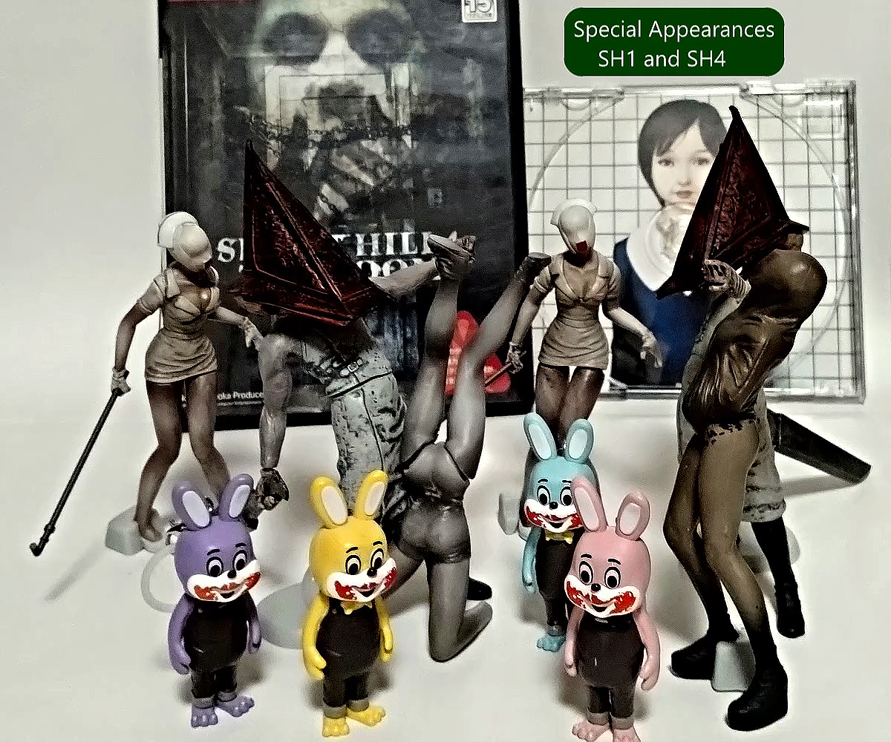
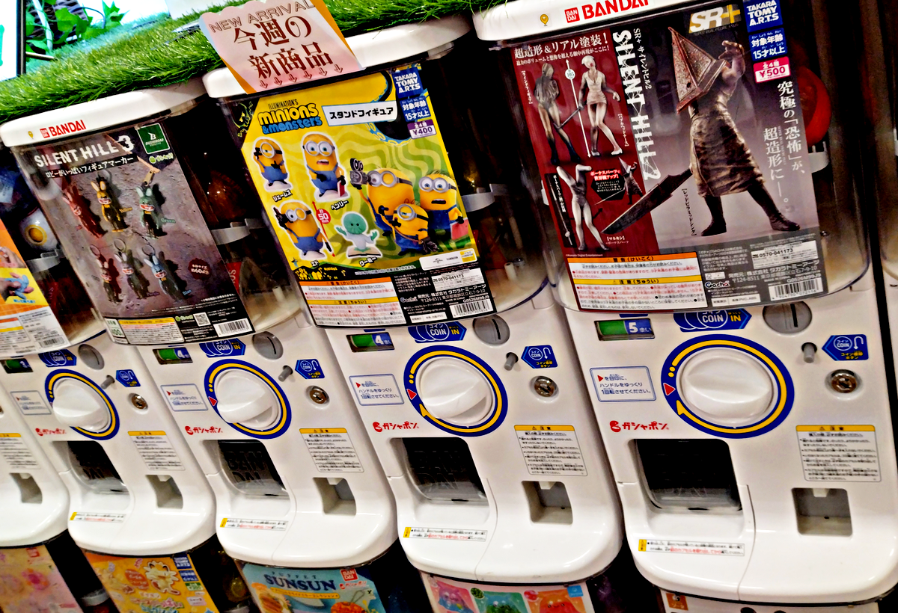
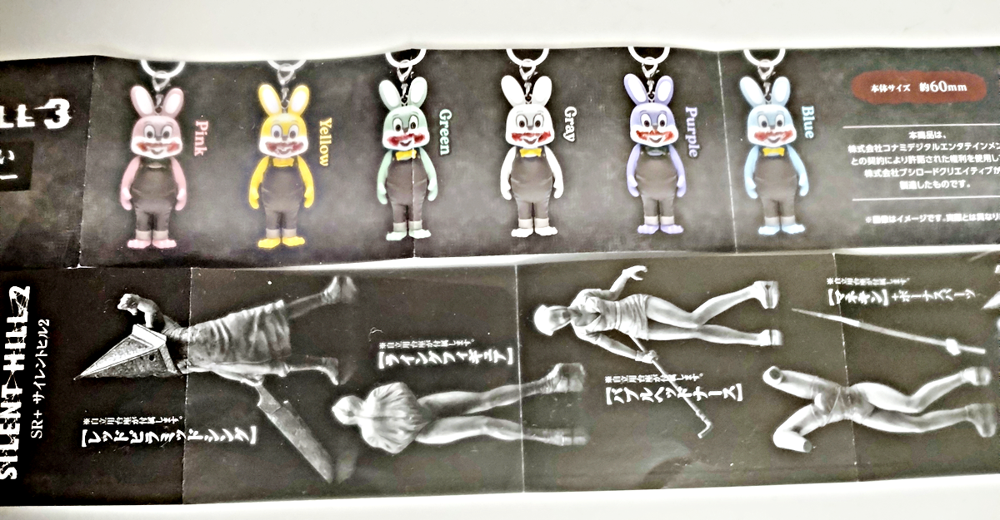

Youtube "Gachapon Puppet Show"

At the end of August 2026, gachapon figures of Silent Hill 2 and Silent Hill 3 came out in Japan around the same time. SH2 had four types, Pyramid Head, Lying Figure, Bubble Headed Nurse, and Mannequin, for 500 yen each. SH3 had different color versions of Robbie the Rabbit, for 400 yen each. I ended up collecting these without even meaning to, and that's how the "Gachapon Puppet Show" got started.
By the way, it seems that Bandai's gachapon is branded as "Gashapon," so these are "Gashapon" too. But I don't want them to be mistaken for official videos, because I'd feel bad if they were (I should be aware of the quality before saying that!). So I call them "Gachapon" as a general term.


It's just an amateur puppet show. I took the pictures in front of a sheet of white paper and added some dialogue. I didn't bother hiding the bases, keychain chains, or anything like that. They're just shown exactly as they are. Some of the pictures aren't even in focus. Thanks to my amateur photography skills. Don't worry about the little details!

Youtube "Gachapon Puppet Show"
These videos are not official. ← Nobody's gonna mistake them! Of course, I'm not monetizing them either, so go ahead, spread them far and wide. You have my blessing!
Watch the playlist on YouTube: Gachapon Puppet Show
Robbie's Ordeal
- Robbie's Ordeal- 1. Robbie the Rabbit is Completely Doomed...
- Robbie's Ordeal- 2. Don't Peek!
- Robbie's Ordeal- 3. Traitorsssss
- Robbie's Ordeal- 4. Feral Nurse
- Robbie's Ordeal- 5. Tail Sunbathing
- Robbie's Ordeal- 6. Bad Squad
- Robbie's Ordeal- 7. A New Awakening
- Robbie's Ordeal- 8. All Over the Place
- Robbie's Ordeal- 9. Like a Hero
- Robbie's Ordeal- 10. Summon Allies